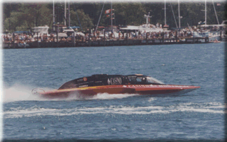
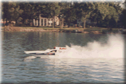
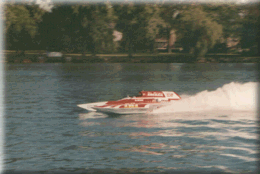

These boats are powered by 500 cubic inch automotive engines and are 26 feet in length or less (the minimum is 21 feet). The boats may use alcohol fuel, and crew chiefs may alter the engines within set restrictions. The fastest boats reach speeds of 170 MPH down the backstretch of the 1-1/4 mile course. Top Grand Prix hydros average 115 to 120 MPH in each five mile heat.

Years ago, it was the Unlimited Hydroplanes that were known as the THUNDERBOATS. Now that most of those run the quieter jet turbines, the Grand Prix and Unlimited Lights are the true THUNDERBOATS of the 90's. The biggest difference between the two classes is that Unlimited Lights are limited to normally-aspirated motors (no supercharger).


The Grand Prix motors are all-out race engines, automotive big-blocks with superchargers and open headers. Chevrolet's are generally the powerplant of choice, but the 1995 Grand Prix Hydroplane Championship went to driver Jimmy King and the MOPAR sponsored team of GP-2, the only team running a Chrysler 426 HEMI.
 Return to the What Is A Hydroplane page.
Return to the What Is A Hydroplane page.
All contents Copyright © 1997 Spirit of Detroit THUNDERFEST, except where noted.
Web page created by Brian Reed.
 Return to the Top THUNDERFEST page.
Return to the Top THUNDERFEST page.
All Rights Reserved.